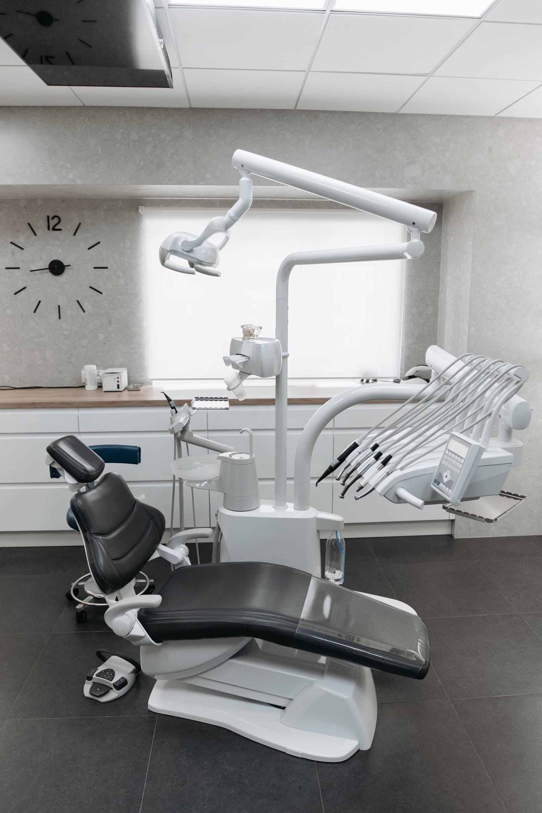
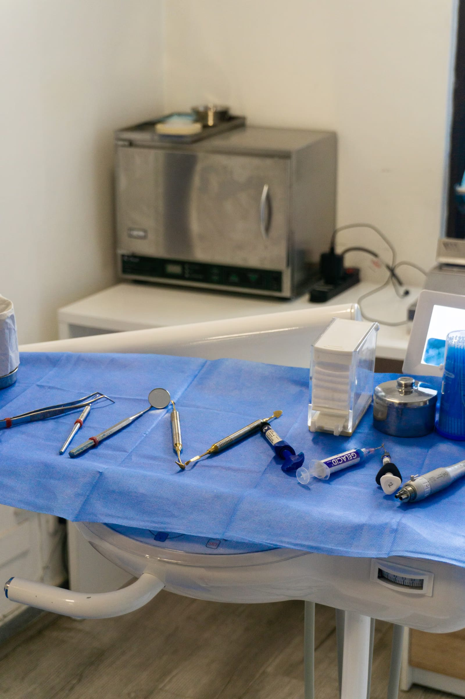

Cennet Mahallesi'ndeki polikliniğimiz her gün açık: hafta içi ve pazar gece yarısına, cumartesi gece 02:00'ye kadar. İşten sonra da randevu alabilirsiniz.
Çubuklar sabah 08:00'den gece 02:00'ye kadar olan zamanı gösteriyor. Polikliniğimizin açık olduğu saatler renkli.
Cumartesi gecesi 02:00'ye kadar açığız. Gelmeden önce arayıp randevu almanızı rica ederiz.
Hangi tedavinin size uygun olduğuna muayeneden sonra, seçenekler anlatılarak birlikte karar verilir.
Ağız içi muayene, gerekirse röntgen ve tedavi planı.
Çürüyen kısmın temizlenip dişin onarılması.
Diş içindeki iltihaplı dokunun temizlenip kanalların doldurulması.
Diş taşı ve plakların temizlenmesi, diş eti kontrolü.
Kurtarılamayan ya da sorun çıkaran dişlerin çekimi.
Eksik dişler için sabit ya da hareketli protez seçenekleri.

İlk muayenede şikâyetinizi dinler, ağız içi muayene yapar ve gerekirse röntgen çekeriz. Ardından durumunuzu ve tedavi seçeneklerini açıkça anlatır, sorularınızı yanıtlarız. Kararı birlikte veririz.